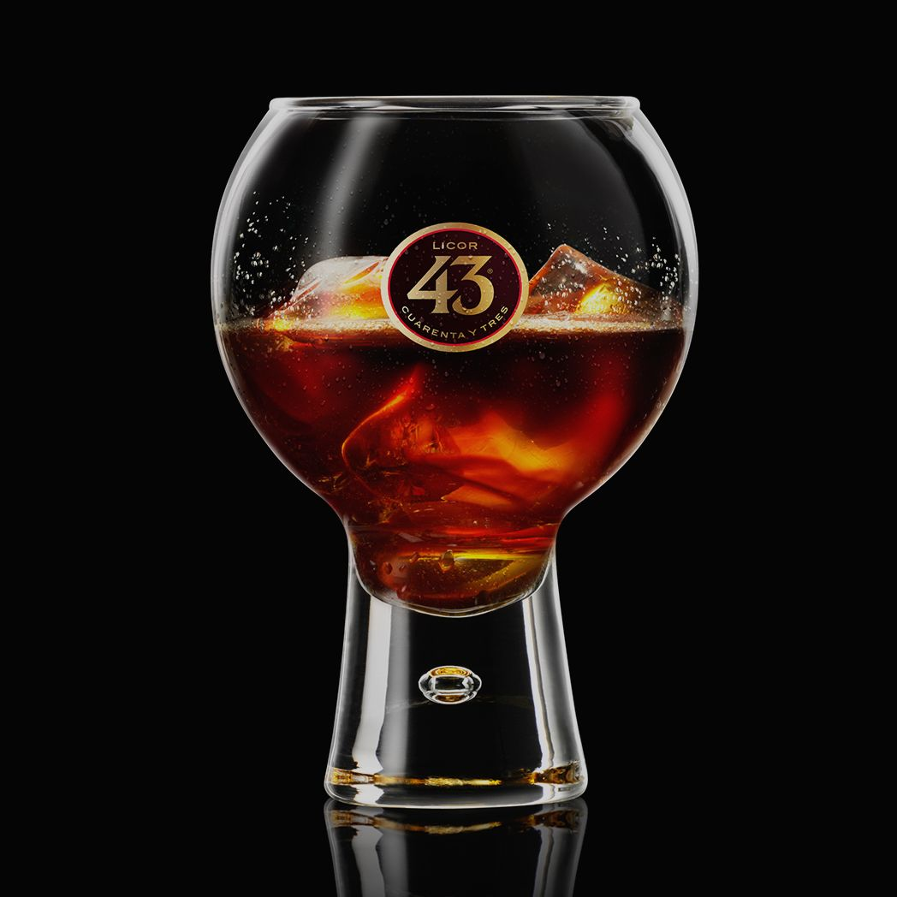

6.1 Riskikoen for angrep aukar
Truslar i det digitale rommet
Dei siste åra har det vore ein stor auke i digitalisering av verktøy og prosessar i verda. I tillegg til alle dei positive tinga dette har medført so har dette og gjort oss sårbar ovanfor angrep frå digitale rommet. Sjølv om dette vert utvegd av alle dei positive endringa denne overgangen har skapt er dette ein bekymring sidan mange av systema som kan bli angripe er nødvendig for samfunnets gang. Dette er grunnen til fokuset rundt digital tryggleik i dag.
